Drama School Architecture · Tejas Ajit Jamdar
NSD — National School of Drama
NATIONAL SCHOOL OF DRAMA
NSD is an academic architectural design project for a National School of Drama by Tejas Ajit Jamdar. It forms part of the semester-six work in this portfolio and explores an educational and cultural building programme.
Eleven original presentation sheets are collected below. Read the project through its architectural presentation, or open the interactive gallery to examine the corresponding three-dimensional model. This is a student design proposal.
Project credits
ACADEMIC
Explore the interactive 3D portfolio →Save NSD — National School of Drama on Pinterest ↗
Project presentation
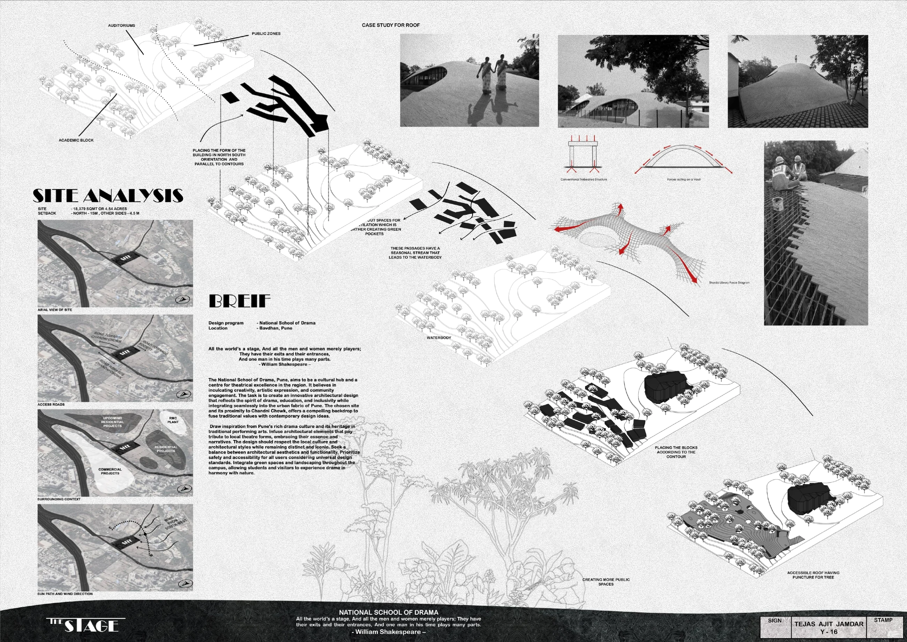
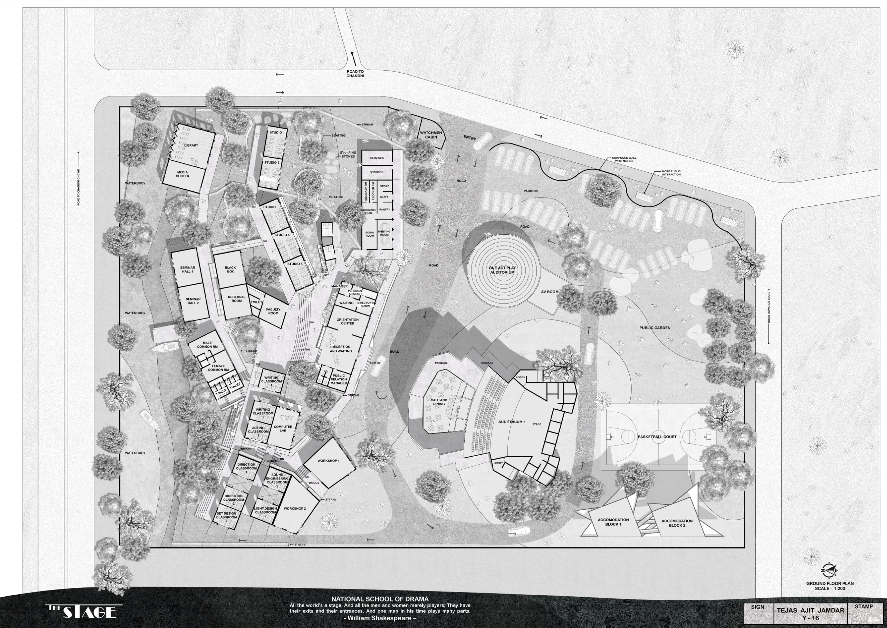
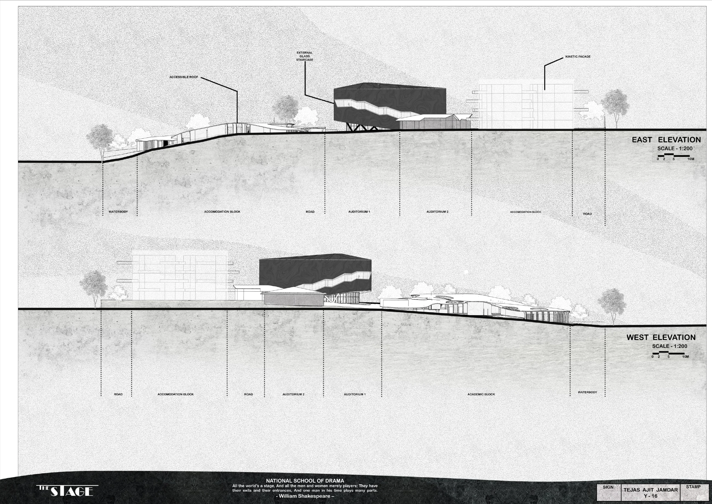
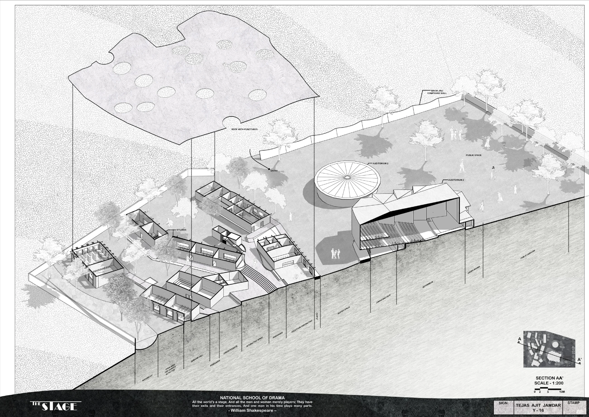
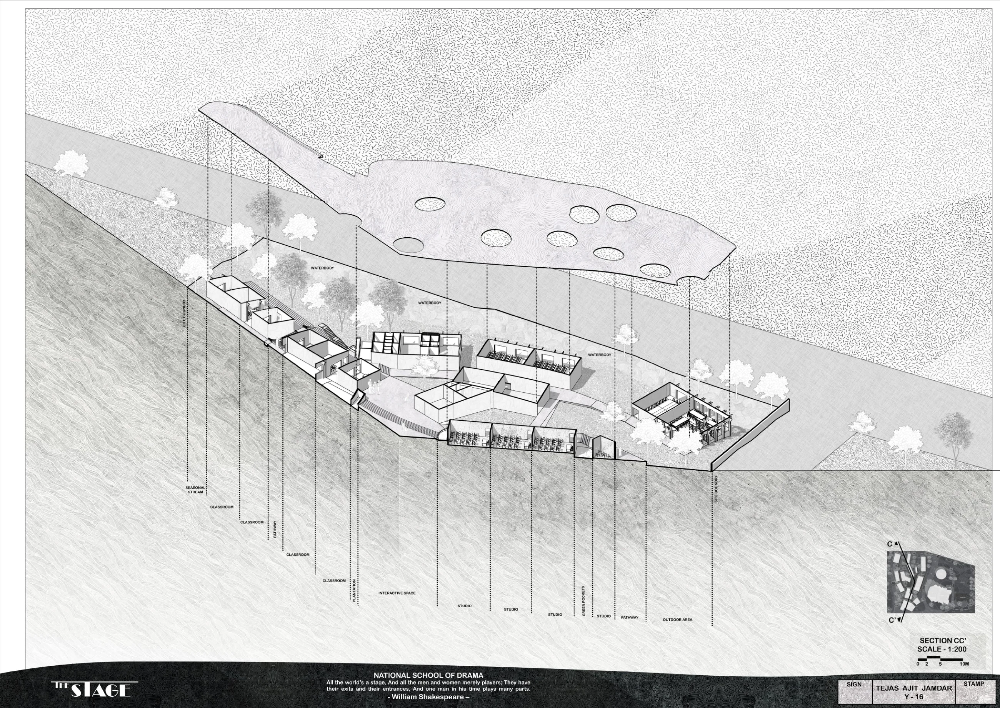
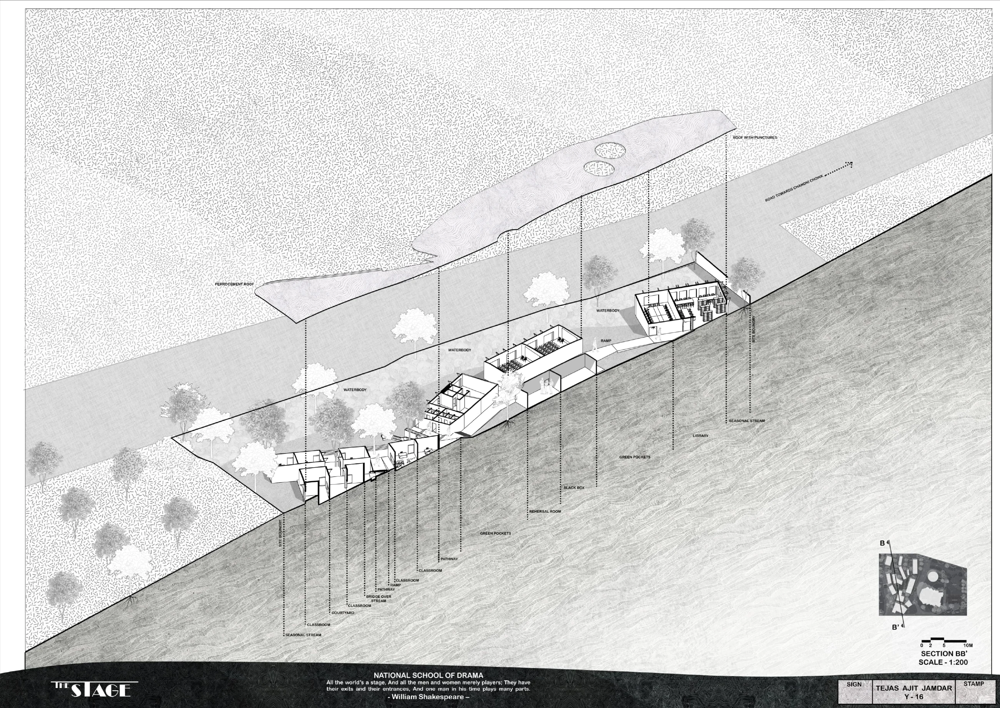
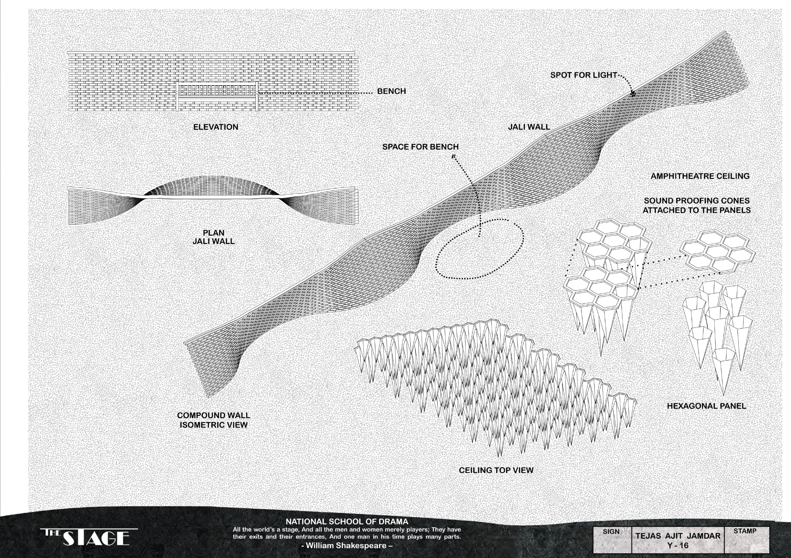
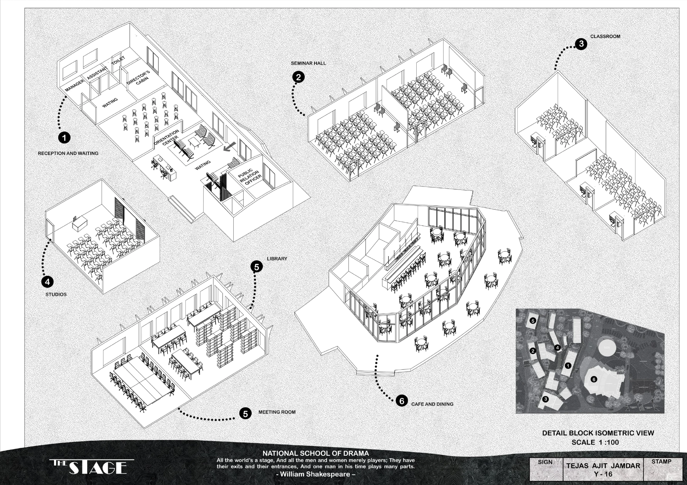
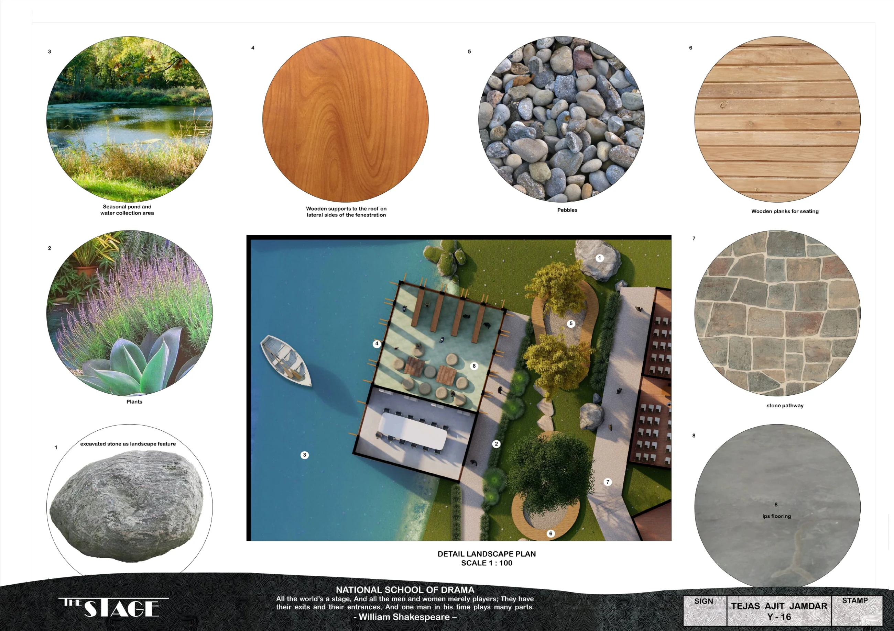
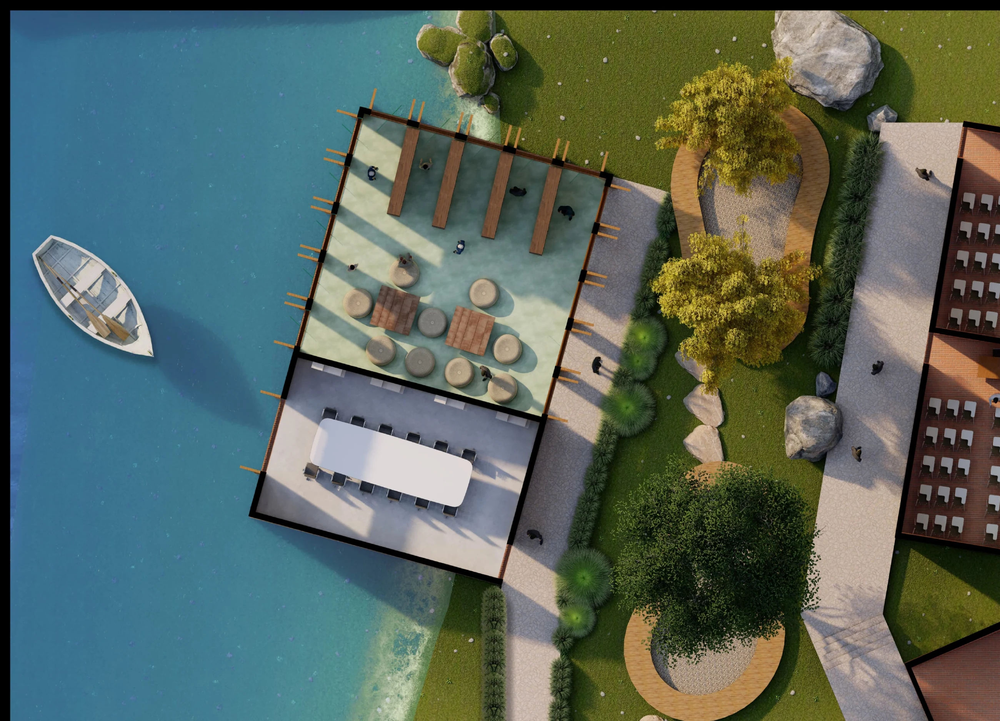
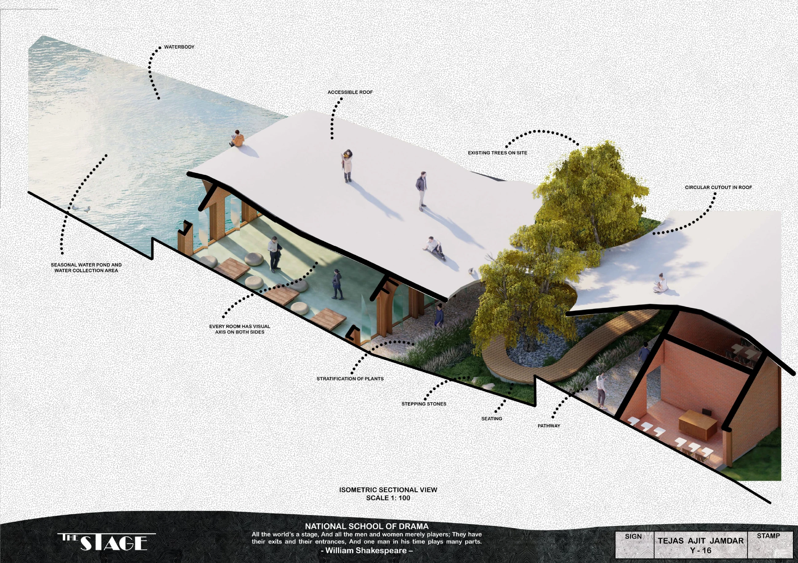